100 个 Base Geometry 的 B / B+ / B++ / B+++ 辅助构造 demo
每张卡片对应一个固定 base_geometry，打开后底部可切换四档 overlay。B 是轻量 witness，B+ 增加有语义的辅助面和面内线，B++ 加一层投影/二面角/剖面联动，B+++ 再上一个小台阶做双截面或上下层转移格。全部为规则生成，没有模型调用。
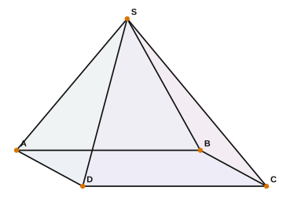
base_001 · 四棱锥 #01 四棱锥 · B / B+ / B++ / B+++ 四档辅助构造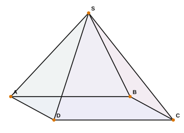
base_002 · 四棱锥 #02 四棱锥 · B / B+ / B++ / B+++ 四档辅助构造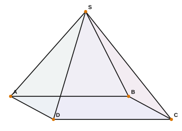
base_003 · 四棱锥 #03 四棱锥 · B / B+ / B++ / B+++ 四档辅助构造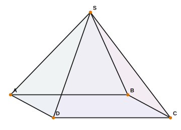
base_004 · 四棱锥 #04 四棱锥 · B / B+ / B++ / B+++ 四档辅助构造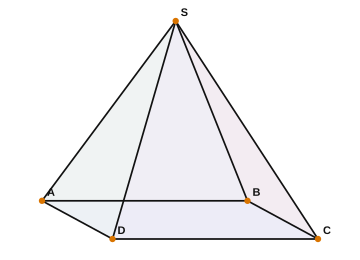
base_005 · 四棱锥 #05 四棱锥 · B / B+ / B++ / B+++ 四档辅助构造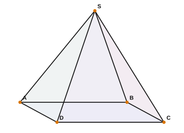
base_006 · 四棱锥 #06 四棱锥 · B / B+ / B++ / B+++ 四档辅助构造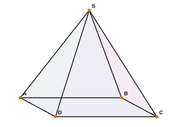
base_007 · 四棱锥 #07 四棱锥 · B / B+ / B++ / B+++ 四档辅助构造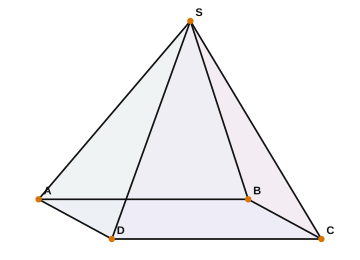
base_008 · 四棱锥 #08 四棱锥 · B / B+ / B++ / B+++ 四档辅助构造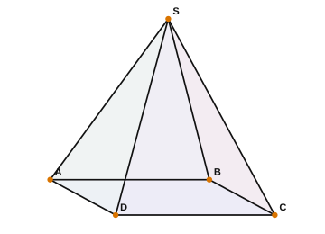
base_009 · 四棱锥 #09 四棱锥 · B / B+ / B++ / B+++ 四档辅助构造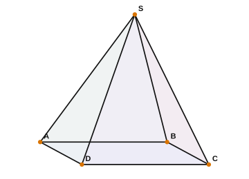
base_010 · 四棱锥 #10 四棱锥 · B / B+ / B++ / B+++ 四档辅助构造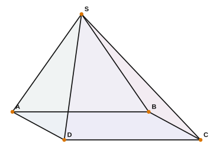
base_011 · 偏顶四棱锥 #01 偏顶四棱锥 · B / B+ / B++ / B+++ 四档辅助构造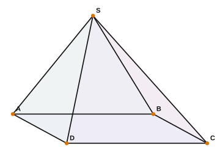
base_012 · 偏顶四棱锥 #02 偏顶四棱锥 · B / B+ / B++ / B+++ 四档辅助构造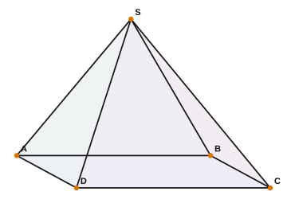
base_013 · 偏顶四棱锥 #03 偏顶四棱锥 · B / B+ / B++ / B+++ 四档辅助构造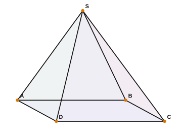
base_014 · 偏顶四棱锥 #04 偏顶四棱锥 · B / B+ / B++ / B+++ 四档辅助构造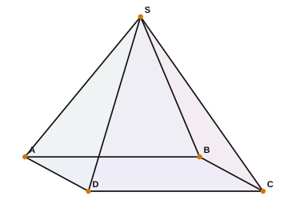
base_015 · 偏顶四棱锥 #05 偏顶四棱锥 · B / B+ / B++ / B+++ 四档辅助构造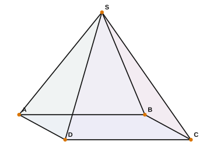
base_016 · 偏顶四棱锥 #06 偏顶四棱锥 · B / B+ / B++ / B+++ 四档辅助构造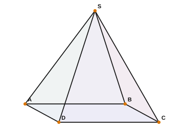
base_017 · 偏顶四棱锥 #07 偏顶四棱锥 · B / B+ / B++ / B+++ 四档辅助构造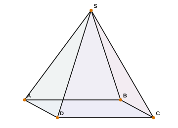
base_018 · 偏顶四棱锥 #08 偏顶四棱锥 · B / B+ / B++ / B+++ 四档辅助构造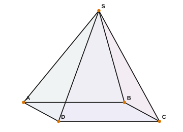
base_019 · 偏顶四棱锥 #09 偏顶四棱锥 · B / B+ / B++ / B+++ 四档辅助构造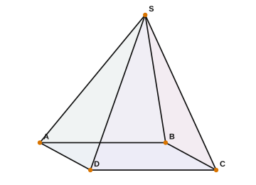
base_020 · 偏顶四棱锥 #10 偏顶四棱锥 · B / B+ / B++ / B+++ 四档辅助构造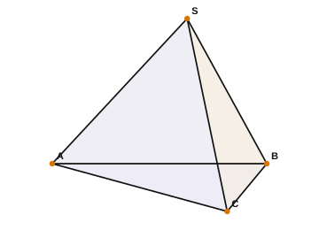
base_021 · 三棱锥 #01 三棱锥 · B / B+ / B++ / B+++ 四档辅助构造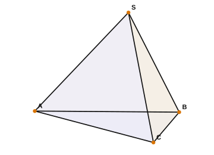
base_022 · 三棱锥 #02 三棱锥 · B / B+ / B++ / B+++ 四档辅助构造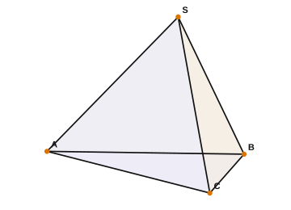
base_023 · 三棱锥 #03 三棱锥 · B / B+ / B++ / B+++ 四档辅助构造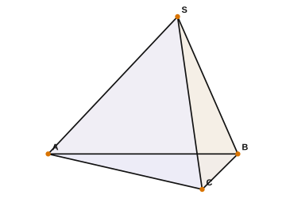
base_024 · 三棱锥 #04 三棱锥 · B / B+ / B++ / B+++ 四档辅助构造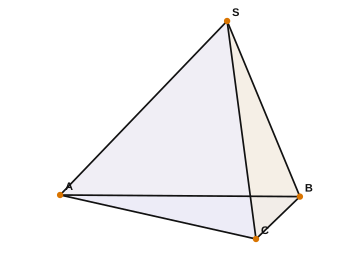
base_025 · 三棱锥 #05 三棱锥 · B / B+ / B++ / B+++ 四档辅助构造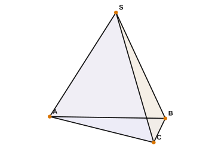
base_026 · 三棱锥 #06 三棱锥 · B / B+ / B++ / B+++ 四档辅助构造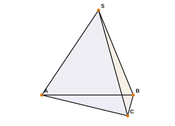
base_027 · 三棱锥 #07 三棱锥 · B / B+ / B++ / B+++ 四档辅助构造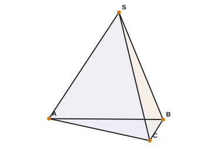
base_028 · 三棱锥 #08 三棱锥 · B / B+ / B++ / B+++ 四档辅助构造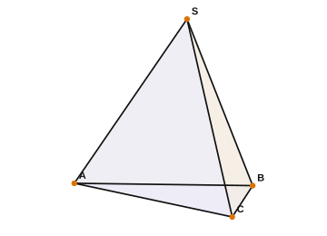
base_029 · 三棱锥 #09 三棱锥 · B / B+ / B++ / B+++ 四档辅助构造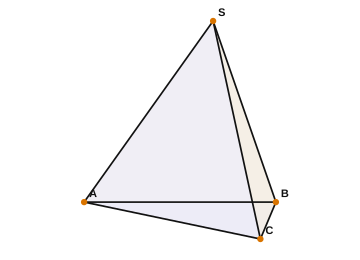
base_030 · 三棱锥 #10 三棱锥 · B / B+ / B++ / B+++ 四档辅助构造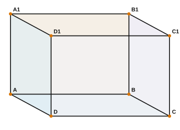
base_031 · 长方体 #01 长方体 · B / B+ / B++ / B+++ 四档辅助构造 base_032 · 长方体 #02 长方体 · B / B+ / B++ / B+++ 四档辅助构造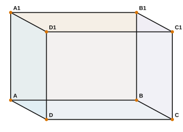
base_033 · 长方体 #03 长方体 · B / B+ / B++ / B+++ 四档辅助构造 base_034 · 长方体 #04 长方体 · B / B+ / B++ / B+++ 四档辅助构造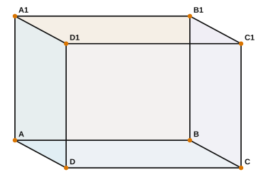
base_035 · 长方体 #05 长方体 · B / B+ / B++ / B+++ 四档辅助构造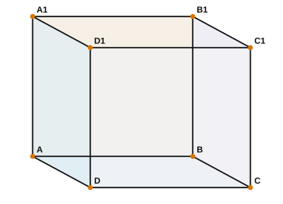
base_036 · 长方体 #06 长方体 · B / B+ / B++ / B+++ 四档辅助构造 base_037 · 长方体 #07 长方体 · B / B+ / B++ / B+++ 四档辅助构造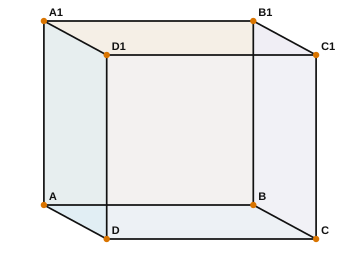
base_038 · 长方体 #08 长方体 · B / B+ / B++ / B+++ 四档辅助构造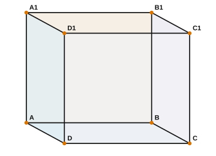
base_039 · 长方体 #09 长方体 · B / B+ / B++ / B+++ 四档辅助构造 base_040 · 长方体 #10 长方体 · B / B+ / B++ / B+++ 四档辅助构造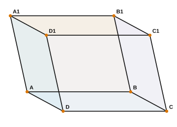
base_041 · 斜四棱柱 #01 斜四棱柱 · B / B+ / B++ / B+++ 四档辅助构造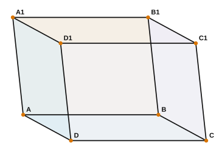
base_042 · 斜四棱柱 #02 斜四棱柱 · B / B+ / B++ / B+++ 四档辅助构造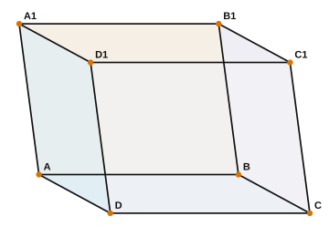
base_043 · 斜四棱柱 #03 斜四棱柱 · B / B+ / B++ / B+++ 四档辅助构造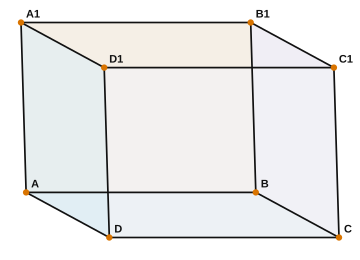
base_044 · 斜四棱柱 #04 斜四棱柱 · B / B+ / B++ / B+++ 四档辅助构造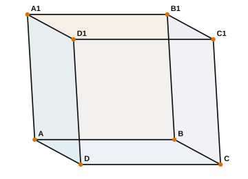
base_045 · 斜四棱柱 #05 斜四棱柱 · B / B+ / B++ / B+++ 四档辅助构造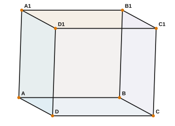
base_046 · 斜四棱柱 #06 斜四棱柱 · B / B+ / B++ / B+++ 四档辅助构造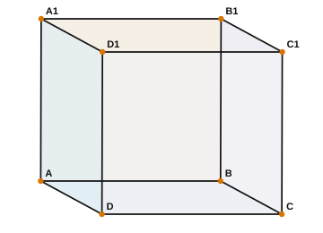
base_047 · 斜四棱柱 #07 斜四棱柱 · B / B+ / B++ / B+++ 四档辅助构造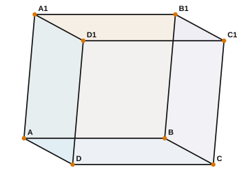
base_048 · 斜四棱柱 #08 斜四棱柱 · B / B+ / B++ / B+++ 四档辅助构造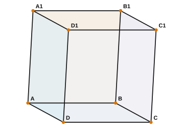
base_049 · 斜四棱柱 #09 斜四棱柱 · B / B+ / B++ / B+++ 四档辅助构造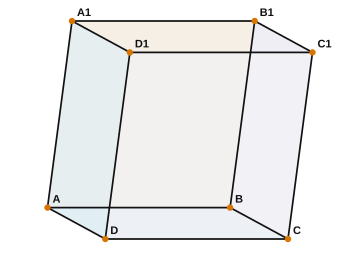
base_050 · 斜四棱柱 #10 斜四棱柱 · B / B+ / B++ / B+++ 四档辅助构造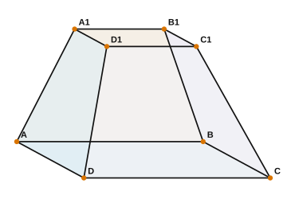
base_051 · 四棱台 #01 四棱台 · B / B+ / B++ / B+++ 四档辅助构造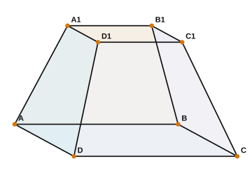
base_052 · 四棱台 #02 四棱台 · B / B+ / B++ / B+++ 四档辅助构造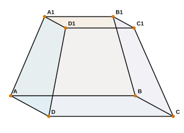
base_053 · 四棱台 #03 四棱台 · B / B+ / B++ / B+++ 四档辅助构造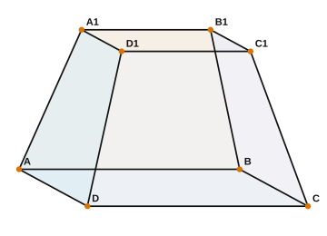
base_054 · 四棱台 #04 四棱台 · B / B+ / B++ / B+++ 四档辅助构造 base_055 · 四棱台 #05 四棱台 · B / B+ / B++ / B+++ 四档辅助构造 base_056 · 四棱台 #06 四棱台 · B / B+ / B++ / B+++ 四档辅助构造 base_057 · 四棱台 #07 四棱台 · B / B+ / B++ / B+++ 四档辅助构造 base_058 · 四棱台 #08 四棱台 · B / B+ / B++ / B+++ 四档辅助构造 base_059 · 四棱台 #09 四棱台 · B / B+ / B++ / B+++ 四档辅助构造 base_060 · 四棱台 #10 四棱台 · B / B+ / B++ / B+++ 四档辅助构造 base_061 · 三棱柱 #01 三棱柱 · B / B+ / B++ / B+++ 四档辅助构造 base_062 · 三棱柱 #02 三棱柱 · B / B+ / B++ / B+++ 四档辅助构造 base_063 · 三棱柱 #03 三棱柱 · B / B+ / B++ / B+++ 四档辅助构造 base_064 · 三棱柱 #04 三棱柱 · B / B+ / B++ / B+++ 四档辅助构造 base_065 · 三棱柱 #05 三棱柱 · B / B+ / B++ / B+++ 四档辅助构造 base_066 · 三棱柱 #06 三棱柱 · B / B+ / B++ / B+++ 四档辅助构造 base_067 · 三棱柱 #07 三棱柱 · B / B+ / B++ / B+++ 四档辅助构造 base_068 · 三棱柱 #08 三棱柱 · B / B+ / B++ / B+++ 四档辅助构造 base_069 · 三棱柱 #09 三棱柱 · B / B+ / B++ / B+++ 四档辅助构造 base_070 · 三棱柱 #10 三棱柱 · B / B+ / B++ / B+++ 四档辅助构造 base_071 · 三棱台 #01 三棱台 · B / B+ / B++ / B+++ 四档辅助构造 base_072 · 三棱台 #02 三棱台 · B / B+ / B++ / B+++ 四档辅助构造 base_073 · 三棱台 #03 三棱台 · B / B+ / B++ / B+++ 四档辅助构造 base_074 · 三棱台 #04 三棱台 · B / B+ / B++ / B+++ 四档辅助构造 base_075 · 三棱台 #05 三棱台 · B / B+ / B++ / B+++ 四档辅助构造 base_076 · 三棱台 #06 三棱台 · B / B+ / B++ / B+++ 四档辅助构造 base_077 · 三棱台 #07 三棱台 · B / B+ / B++ / B+++ 四档辅助构造 base_078 · 三棱台 #08 三棱台 · B / B+ / B++ / B+++ 四档辅助构造 base_079 · 三棱台 #09 三棱台 · B / B+ / B++ / B+++ 四档辅助构造 base_080 · 三棱台 #10 三棱台 · B / B+ / B++ / B+++ 四档辅助构造 base_081 · 楔形体 #01 楔形体 · B / B+ / B++ / B+++ 四档辅助构造 base_082 · 楔形体 #02 楔形体 · B / B+ / B++ / B+++ 四档辅助构造 base_083 · 楔形体 #03 楔形体 · B / B+ / B++ / B+++ 四档辅助构造 base_084 · 楔形体 #04 楔形体 · B / B+ / B++ / B+++ 四档辅助构造 base_085 · 楔形体 #05 楔形体 · B / B+ / B++ / B+++ 四档辅助构造 base_086 · 楔形体 #06 楔形体 · B / B+ / B++ / B+++ 四档辅助构造 base_087 · 楔形体 #07 楔形体 · B / B+ / B++ / B+++ 四档辅助构造 base_088 · 楔形体 #08 楔形体 · B / B+ / B++ / B+++ 四档辅助构造 base_089 · 楔形体 #09 楔形体 · B / B+ / B++ / B+++ 四档辅助构造 base_090 · 楔形体 #10 楔形体 · B / B+ / B++ / B+++ 四档辅助构造 base_091 · 长方体叠四棱锥 #01 长方体叠四棱锥 · B / B+ / B++ / B+++ 四档辅助构造 base_092 · 长方体叠四棱锥 #02 长方体叠四棱锥 · B / B+ / B++ / B+++ 四档辅助构造 base_093 · 长方体叠四棱锥 #03 长方体叠四棱锥 · B / B+ / B++ / B+++ 四档辅助构造 base_094 · 长方体叠四棱锥 #04 长方体叠四棱锥 · B / B+ / B++ / B+++ 四档辅助构造 base_095 · 长方体叠四棱锥 #05 长方体叠四棱锥 · B / B+ / B++ / B+++ 四档辅助构造 base_096 · 长方体叠四棱锥 #06 长方体叠四棱锥 · B / B+ / B++ / B+++ 四档辅助构造 base_097 · 长方体叠四棱锥 #07 长方体叠四棱锥 · B / B+ / B++ / B+++ 四档辅助构造 base_098 · 长方体叠四棱锥 #08 长方体叠四棱锥 · B / B+ / B++ / B+++ 四档辅助构造 base_099 · 长方体叠四棱锥 #09 长方体叠四棱锥 · B / B+ / B++ / B+++ 四档辅助构造 base_100 · 长方体叠四棱锥 #10 长方体叠四棱锥 · B / B+ / B++ / B+++ 四档辅助构造